Created: 06/03/2014
By: Patchesoft
Email: patchesoft@gmail.com
Hello! This document is used to help those wanting to setup the Social Login Features of the UZY Management System. For help on installing and modifying the UZY System, please read the doucmentation file that came with it: here
The UZY System allows for users to login to the system via Twitter, Facebook and Google. This guide aims to help you activate this feature. You can disable Social Logins via the Admin Panel. In order for the social login to work, you need to add the correct Social Network keys to your admin area. This guide will show you where you can obtain these keys and where they need to go. Users that login via Social Networks just have to click the Login With Twitter/Facebook/Google buttons and the UZY System will connect to the social network to obtain their user information and log them into the system. All the user has to do is click and it allows them to use the Uzy System without having to enter lots of information on the register page.
In order to implement the Twitter Social Login, you will need to get the following information:
To get this information, you need to create your own App at the Twitter Developer's website: https://dev.twitter.com/. It's free to do and easy to setup.
First you will want to head to the Twitter Developer site and login using your Twitter Account. Once your logged in, head over to https://apps.twitter.com/. Click the Create New App button in the right corner.
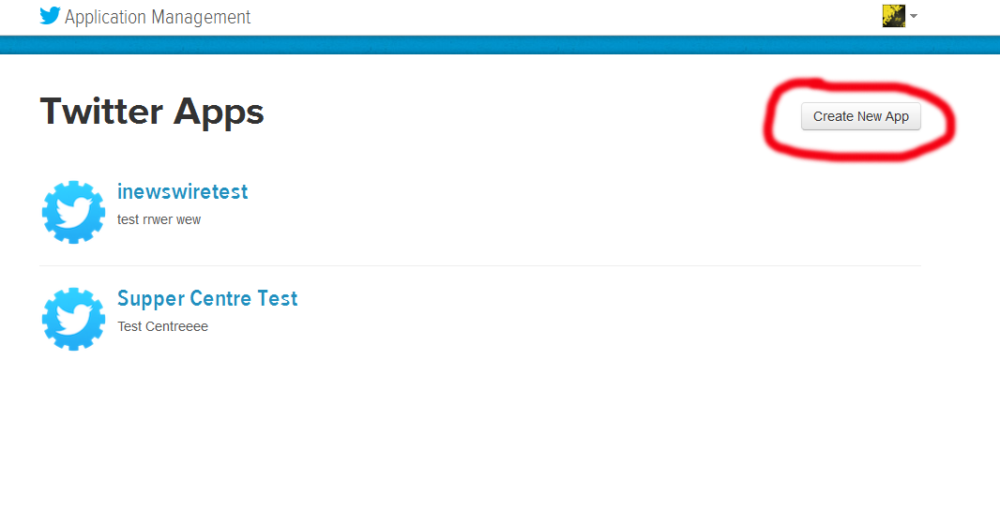Next you want to fill out your App Information. In the Callback URL field, you want to enter your website URL followed by /login/twitter_login_pro; so if your website URL was http://www.patchesoft.com, the URL you would enter would be http://www.patchesoft.com/login/twitter_login_pro
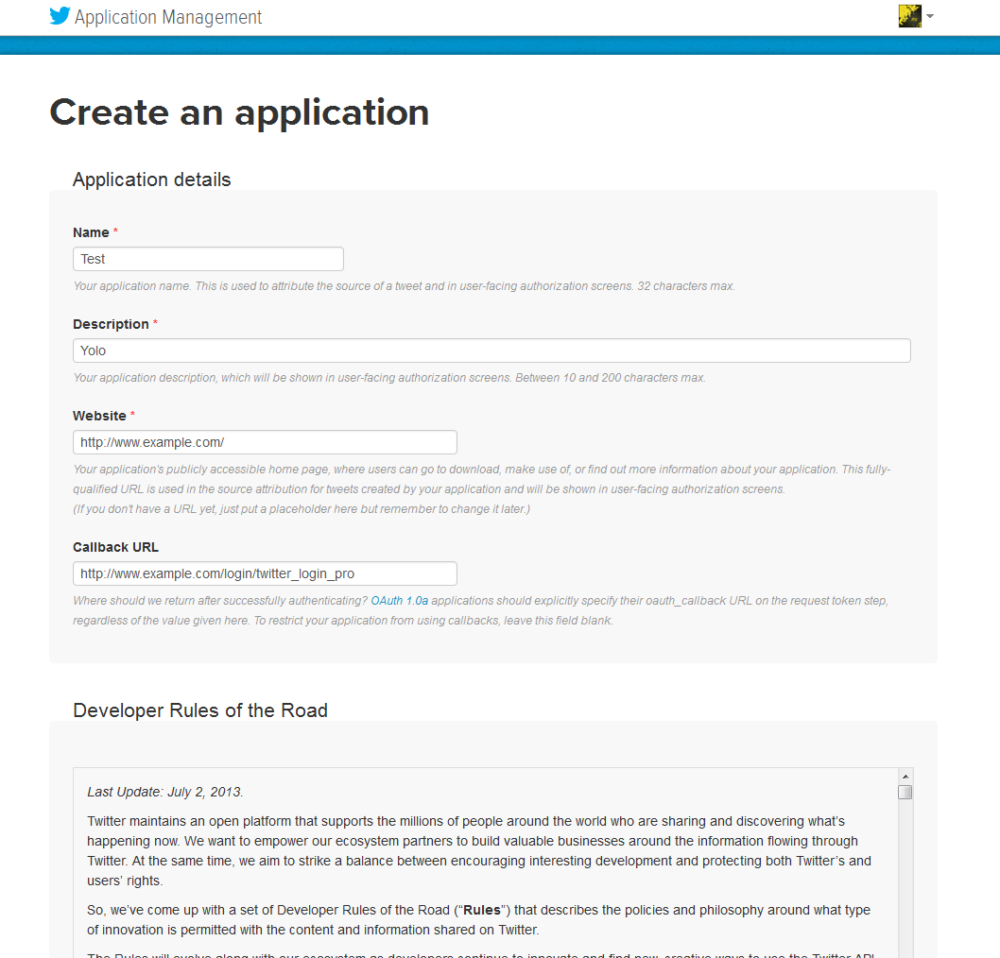Once created, click on the API tab.
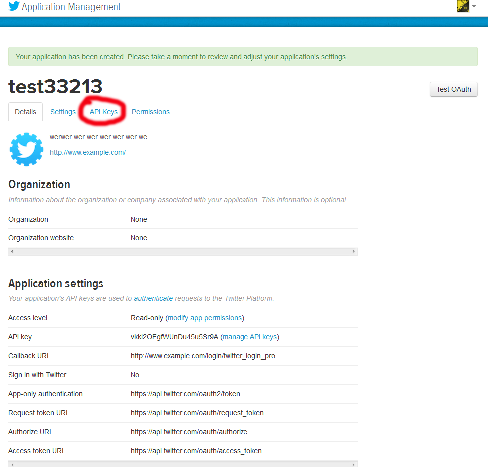On the API Tab, scroll to the bottom to find the Create My Access Token button. Click it. Your tokens will then be generated; it may take a few minutes for them to appear on the page. Just refresh every couple of minutes until you come to a page like the one below.
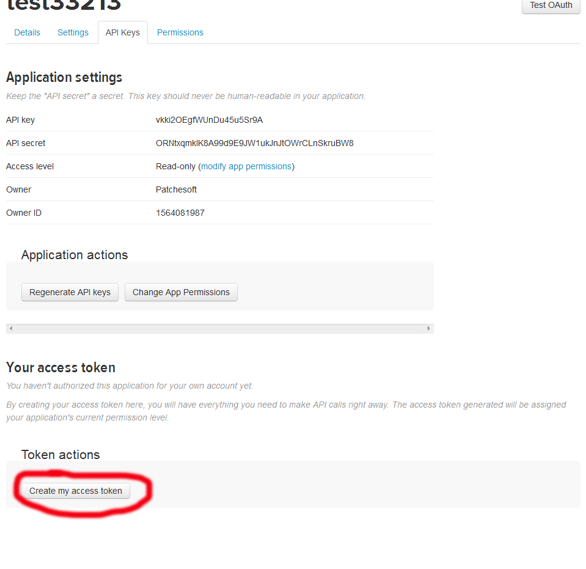 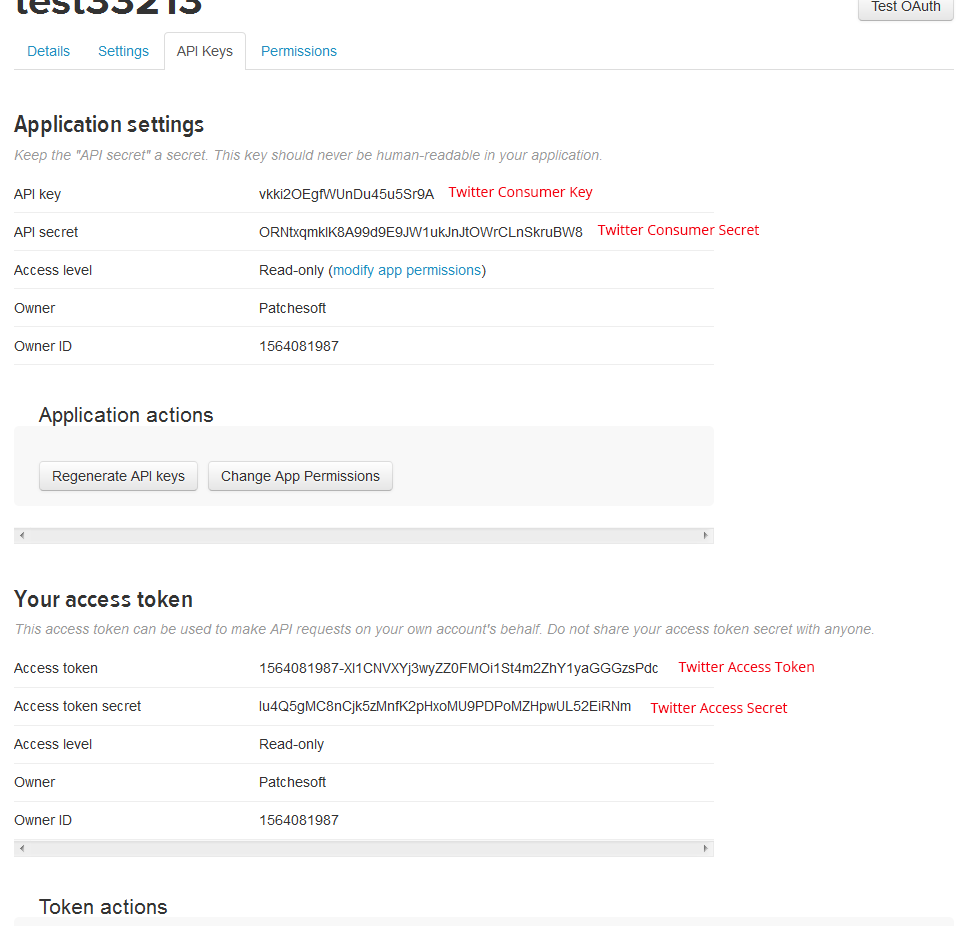Now you need to enter the keys from your app into the Admin Panel of your UZY System. You can find the Twitter Settings under the Social Media Link.
In order to implement the Facebook Social Login, you will need to get the following information:
To get this information, you need to create your own Facebook App at the Facebook Developer's website: https://developers.facebook.com/
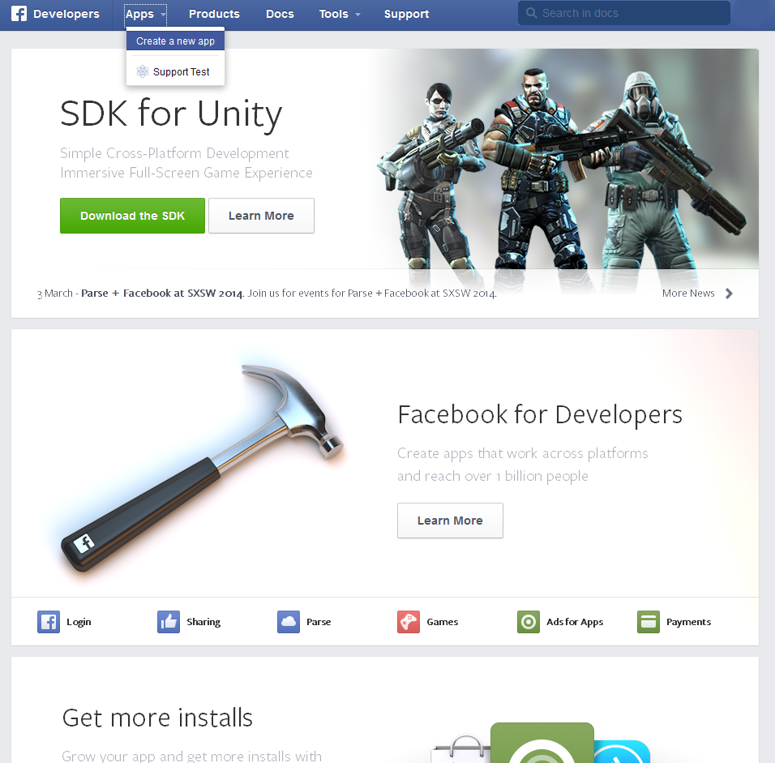Click on the APPs tab and select Create a new app
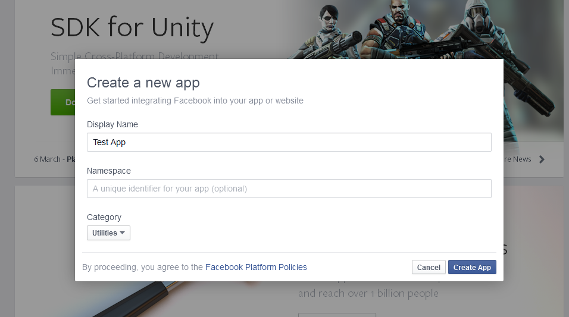Give your App a name. You can ignore the namespace field. Select a category and then hit the Create button.
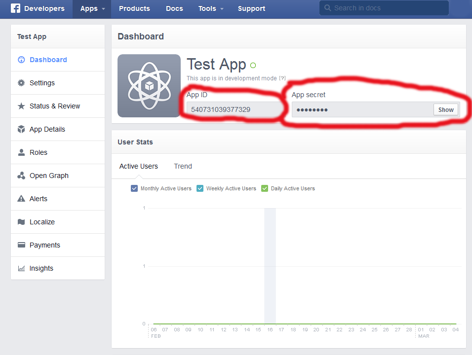On the above page you will be able to get your Facebook APP ID and Facebook APP Secret. Then you need to add them to the UZY System in the Admin Panel. You can find the Facebook Keys under the Social Media Tab.
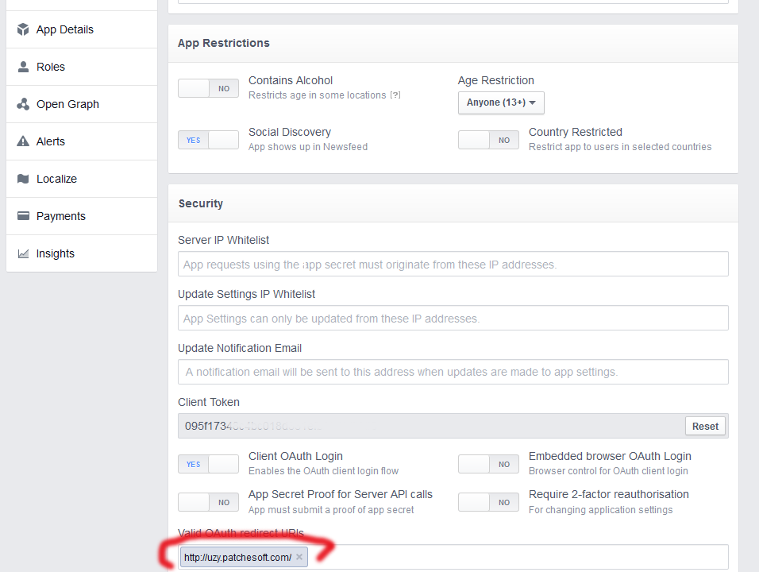The final step is to click on the Settings tab on the Facebook Developers page and then click the Advanced Top Tab. Scroll to the bottom and find the Valid OAuth redirect URIs and add in your websites URL as shown above.
In order to implement the Google Social Login, you will need to get the following information:
To get this information, you need to create your own Google App at the Google Developer's website: https://console.developers.google.com
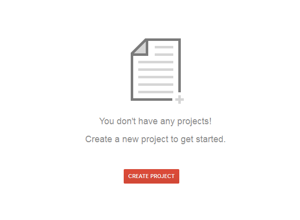Click Create A Project. Give your project a name and Accept the Terms Of Use.
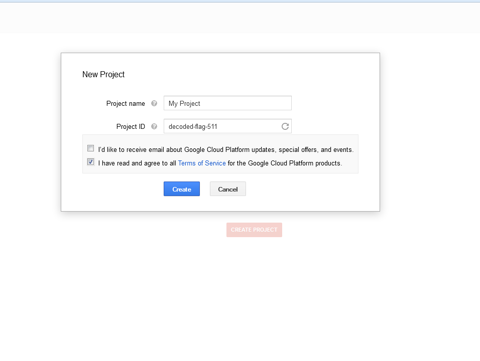Next click on the API & Auths tab and then the Credentials Tab. Click on the Create New Client ID button and fill in your information. For the Authorized redirect URI enter your domain name followed by /login/google_login so for example: http://www.example.com/login/google_login. For the Authorized JavaScript origins just enter your website's URL.
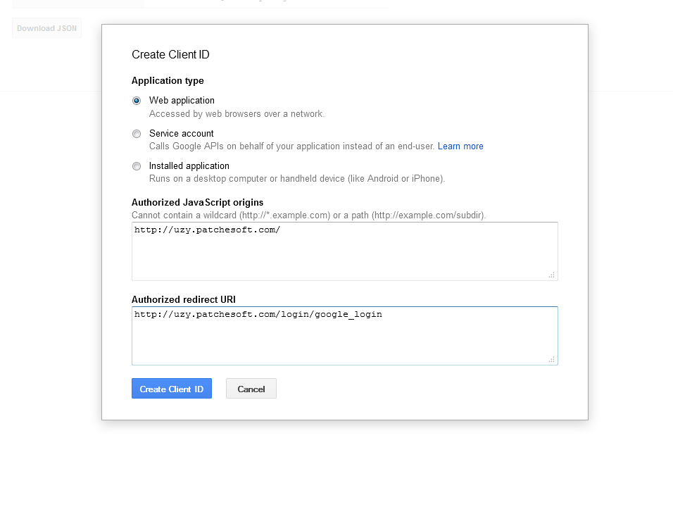Once created you will find your Client ID and Client Secret values.
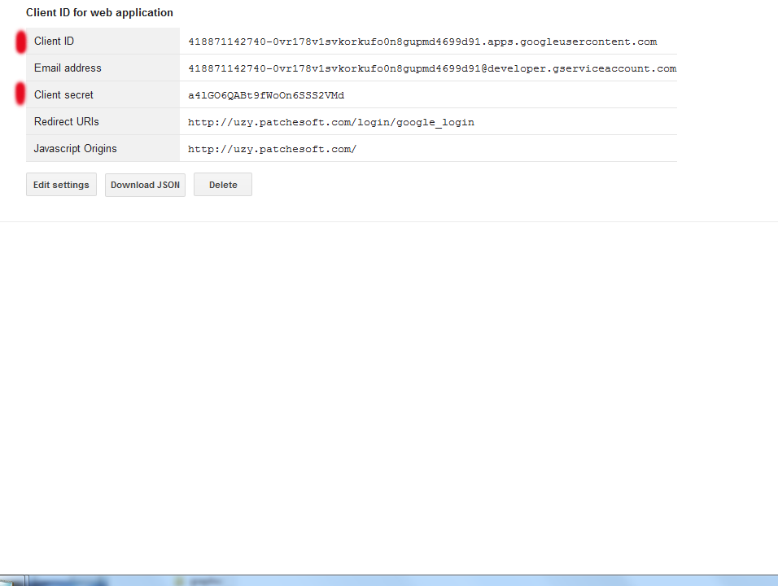The final step is to make sure the Google+ API setting is set to ON. Check out the scrrenshot below.
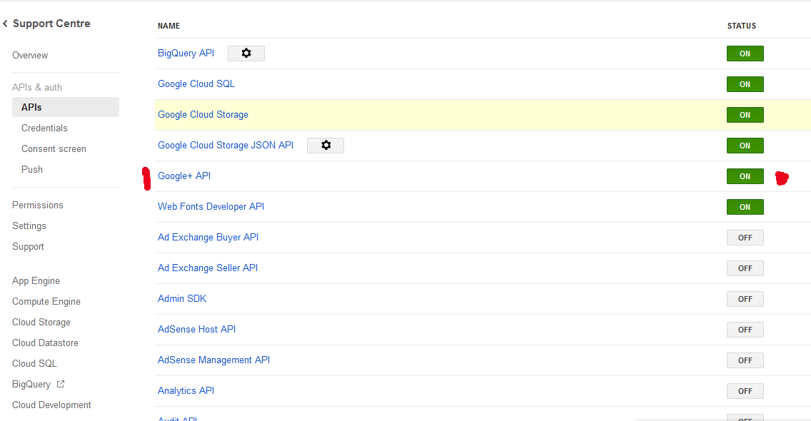Now you have both keys and can add them to the UZY System. Go to the Admin Panel and locate the Social Media Link to find the place where to insert the keys.
Hopefully the Social Network sites don't update their User Interface for their Developer Websites in the next few months otherwise the screenshots may be a little out of date. Once you have all the keys, logging into Social Network should work. Make sure it is enabled in the Admin Panel under Global Settings. Don't use the keys in the screenshot because they won't work.
Patchesoft